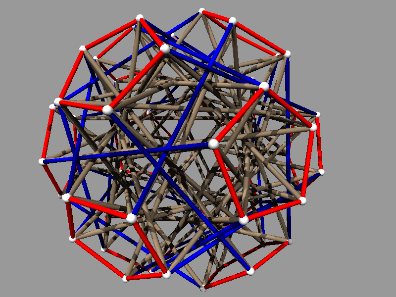
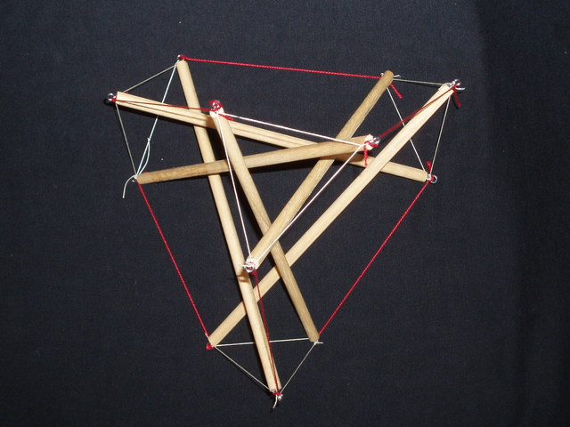
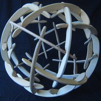
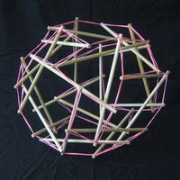
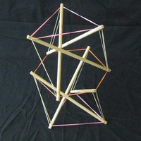

Home
This is access to a catalog of several hundred tensegrity structures that are held rigidly together with incompressible struts and inextendable cables connecting point nodes. These structures are highly symmetric in the sense that there is a symmetry of the structure that takes any node to any other, there is a symmetry of the structure that takes any strut to any other, and there are two classes of cables, where there is a symmetry of the structure that takes any cable to any other in the same class.
The picture on the left shows an example you can rotate.

The picture on the right, which does not rotate, was also made from output of the program.
To go to the catalog, click Run Program, and follow the prompts which will appear in the text area in the lower right hand corner.
For more details, see the links in the sidebar.
Highly Symmetric Tensegrity Structure
Frequently Asked Questions (F.A.Q.)
1. What is a tensegrity?
It is a structure that joins nodes (points) with inextendibile cables and incompressible struts. The cable can be made from string, wire, or rope, and struts can be made from tubes, dowel rods, or just sticks. See wikipedia for a reasonable definition.
2. What is the mathematical definition of a tensegrity?
It is a finite configuration of points, the nodes, in space or the plane where some pairs of the nodes are designated cables, constrained not to get further apart, and some pairs are designated struts, constrained not to get closer together. Note with this definition cables and struts are allowed to intersect and cross.
3. Who first created a tensegrity?
If you don't count spider webs and constructions in nature, an artist Kenneth Snelson is usually credited with the first creations. He has an interesting website here.
4. Who thought of the name tensegrity?
Buckminster Fuller. It combines the notion of "tension" with "integrity", creating "tensional integrity. You can see Bucky's musings here.
5. Where can I read more about this catalog and tensegrities?
- Allen Back and Bob Connelly have an article here in the March-April 1998 issue of the American Scientist that explains a lot of what goes into this catalog.
- There is the paper by Bob Connelly and Walter Whiteley here that that discusses some of the basic geometric principles for the stability of tensegrity structure.
- Bob Connelly and Maria Terrell have a paper, 1995. Globally rigid symmetric tensegrities. Structural Topology, 21, 59--78, that classifies a collection of super stable symmetric tensegrities. It is available here.
- For engineering background see "Theory of Structures" by Timoshenko and Young.
6. What are some links to other sites that show tensegrities?
- There is the older catalog created by Allen Back and Bob Connelly here.
- There is a catalog created by Jingyao Zhang and Simon Guest of symmetric prismatic tensegrity structures here.
- There is a site
here, where a
few symmetric and non-symmetric tensegrities can be viewed and rotated.
This seems to be a kind virtual tensegrity, where the configuration
minimizes an energy functional on the cables.
7. Can I build these tensegrities?
Why not? Once you have chosen a particular example, you can read off the lengths of the cable relative to the strut lengths in the lower right window. The picture should help you thread the cables and struts. There is only one way to make the structure with those lengths if everything is hooked up right. There are various materials that you can use. Dowl rods with nails in them are popular as in Pugh's book or George Hart's page, or Hugh Kenner, Geodesic Math and How to Use It, Univ. Cal Pr., 1976, or René Motro's book "Tensegrity: Structural Systems for the Future".
8. Can I look at the source code for the applet?
Yes. It is here . If you want to modify the program and recompile, then you will also need to get the render and jama packages listed in the references, or at least grab the render.jar and Jama.jar archives.
There is also a modified version of the applet which is used to make the rotatable icons. For this you will need the source code . For each rotatable icon you want to make, run the main applet until you find an example you like, then read the required parameters from the applet and its source code, copying the example from our Home page.
9. What is the "tracecode" button?
It has two uses: a) If you want the coordinates of all the vertices of the tensegrity currently displayed, those show up as the centers of the "sphere" commands. You might need those if you are planning to build it three stories high, for example. b) If you want to make a really sharp raytraced picture of the displayed tensegrity, copy and paste the displayed code into a file. (This works best on some platforms if you click at the bottom and drag upward.) Edit the file if you want to change the colors and textures, and run povray on it. The nonrotatable picture on the Home page was made in this manner.
10. Will the structures shown in this catalog hold together?
Yes. They are all rigid, but not all choices give interesting tensegrities. Some are very degenerate.
11. How are the structures chosen?
They must satisfy the following list of criteria: They
must have the symmetries of one of the
six groups A4, S4,
A5, A4 x Z2, S4 x Z2,
A5 x Z2; There are two classes (each class
is designated by its own color, usually red and blue) of cables such that there is a
symmetry of the structure that takes takes any cable of one class to any other
cable of the same class; For any two struts (colored brown or green),
there is a symmetry of the structure that takes any strut onto any other;
The cables are connected as a set; The whole tensegrity structure must be super stable.
12. What does it mean that a tensegrity is super stable?
This is a very strong condition on the geometry of the structure. There is a particular calculation that can be made in terms of the stress that exists in the structure. Certain numbers, called eigen values, calculated. If they are positive with altogether only 4 of them being 0, the structure will be super stable. A consequence of this is that the structure is globally rigid in all dimensions. This means that if there is any other placement of the nodes satisfying the cable and strut conditions, then this placement will be congruent to the original. It will be the same configuration, possibly rotated or reflected and then rotated. Another consequence is that if you build this structure it will stay stable and rigid, even when the stress is increased relative to the stiffness. This is very handy for these tensegrities, since the stiffness of the cables especially tends to be very soft.
13. If I have a tensegrity where all the nodes are the same, and it holds together, will it be in this catalog?
Not necessarily. It could be rigid, but not super
stable. Or it could have a different symmetry than one of the one of the six groups
in this catalog. For example, the symmetric tensegrids described here have a
symmetry group isomorphic a dihedral group.
14. What is a group?
It is a set where any two elements g1 and g2 of the set can be multiplied together to get another element g2g1of the set. The multiplication operation (or group operation) must satisfy the rules of associativity, inverses, and identity. See wikipedia for more details. Presented this way, this is a definition of an abstract group. There are tons and tons of many different kinds of examples of groups. Here we concentrate on, permutation groups, symmetry groups, and groups of matrices. (You can look at a book such as "Introduction to Modern Algebra" by Birkhoff and Maclane for a nice introduction.) This approach greatly simplifies the cataloging of the tensegrities we consider.
15. What is a permutation group?
This is a set of functions, called permutations, that permute the elements of some set. To be a group, any composition of these permutations in the group is another permutation in the group. We use the disjoint cycle notation for permutation groups considered here. Our groups permute the symbols 1, 2, 3, ..., n. The symbol (a, b, c, ..., d) means a -> b ->c -> ... -> d -> a. In other words these symbols are permuted cyclicly. The product of these cycles means the composition of the corresponding cycles. It is easy to see that any permutation can be written as the product of such disjoint cycles. For example, (12)(345) means 1 and 2 are switched, and 3 goes to 4, which goes to 5, which goes to three.
16. What are the groups A4 and A5?
These are the alternating groups on 4 symbols and 5 symbols, respectively. These are all the even permutations of 4 symbols and 5 symbols, respectively. A permutation is even if when it is written in disjoint cycle notation, there are an even number of cycles of even length. For example, (12) is not even, but (12)(34) and (123) are even permutations. The group A4 has 12 elements, and the group A5 has 60 elements.
17. What is the group S4?
This is the group of all permutations of 4 symbols and has 24 elements.
18. What are the groups A4 x Z2, S4 x Z2, A5 x Z2?
The G x Z2 notation denotes the cross product which means that you take two copies of the group G, where one copy has a - sign attached. The group operation on the - acts like multiplication by -1. For example, -(12) times -(34) in S4 x Z2 is (12)(34). The G x Z2 groups have twice as many groups elements as G. So A4 x Z2 has 24 elements, S4 x Z2 has 48 elements, and A5 x Z2 has 120 elements.
19. Why are these groups chosen?
These are isomorphic to groups of symmetries of the cube, regular tetrahedron, and dodecahedron. A4 is isomorphic to the rotations of regular tetrahedron. S4 is isomorphic to the rotations of a cube. A5 is isomorphic to the rotations of the regular dodecahedron. The groups A4 x Z2, S4 x Z2, A5 x Z2 are the full group of symmetries, including reflections, of the regular tetrahedron, cube and regular dodecahedron, respectively. In the choices for the Java output in our program subscripts and the cross "x" are suppressed.
20. What does isomorphic mean?
If G1 and G2 are two groups, an isomorphism is a one-to-one function f (when g is not h, f(g) is not f(h)) defined on all the elements of G1 with values in G2 such that for every g, h in G1, f(g)f(h)=f(gh), and every element of G2 is the image of some element in G1. This means that from the point of view of formal group operations, G1 and G2 are the same. If two groups are isomorphic they must have the same number of elements, but, for example, A4 x Z2 and S4 both have 24 elements, yet they are not isomorphic.
21. What is a symmetry group?
It is a collection of rigid distance preserving functions of all of space, where each function transforms some set to itself. The group operation is the composition of these functions, and so to be a group, the composition of any two such functions in the group is also in the group. For example the rotations of regular tetrahedron, cube or regular dodecahedron are symmetry groups.
22. Does the tensegrity always have a group of symmetries isomorphic to the group in the group window?
Yes, but the tensegrity itself may have other larger groups of symmetries.
23. What is the order of a group element?
If g is a group element, then gn is g multiplied by
itself n times. The order of g is the smallest n = 1, 2, ... such
that gn = e the identity element. For example, the
permutation (12)(34) has order
is 2, and the element -(12345) in A4 x Z2, has
order
is 10. It is particularly easy to figure the order of a
permutation when
it is written in disjoint cycle notation.
24. What does the group inverse mean?
One of the defining properties of a group is that if g is a group element, then there is a group element g-1, where gg-1 = g-1g = e, the identity element. g-1 is the inverse of g. For example, the inverse of (123) is (321). If g is of order 2, then g = g-1.
25. When I choose a group elements in the cable and strut windows, what does that mean?
When the situation is not degenerate, there is a one-to-one correspondence between the nodes of the tensegrity and the group elements. Any node can be identified with the identity element of the group, and the two group elements in the cable window and the group element in the strut window are identified with cables and struts that are connected to the identity node. Note that if g is a group element corresponding to a strut or cable, then the inverse element g-1 also corresponds to the same cable or strut.
26. I want the struts not to touch each other. How can I find examples where that happens?
If the order of a strut is greater than 2, then there are two struts connected to each node. So you at least have to choose a group element in the strut window that is of order 2. But it still may happen that the struts will cross somewhere in their middle. This tends to happen for the groups with a Z2 factor. (They have mirror reflection symmetries, and the struts will intersect their mirror image, if the mirror intersects the struts obliquely.) But in any case, you can look at the picture and see if they intersect. If you try a different stress ratio in the last window, that might pull some of the struts apart. In some cases, you might need to use the "thinner" button and "zoom in" to decide whether there is really an intersection or not.
27. What do those funny lines in the window on the right in the program mean?
Each curved line, or lines, of a given color corresponds to a particular representation of the group chosen. When you click in the right hand window, a vertical line appears through the point you clicked on. The horizontal axis corresponds to the ratio between the stresses on the two cables you have chosen in the cable window. The vertical axis corresponds to the stress on the strut. When the strut stress is below the top horizontal line, it is negative. When the strut stress crosses one of the curved lines, the tensegrity becomes unstable, but right at that the point on the first curved line, it corresponds to an equilibrium that it needs for its stability, but the representation that corresponds to that line. We call that first representation the winner.
28. What is a representation of a group?
It is a function that assigns to each element g in the group G a symmetry of some Euclidean space. But the Euclidean space may be of dimension greater than 3. (This can happen for A5 and A5 x Z2.) Suppose g goes to f(g), and h in G goes to f(h). Then we insist that f(g)f(h)=f(gh). f is called a group homomorphism. This is the same property as being an isomorphism, except that f may not be one-to-one or onto. The representation f(g) may be the identity, for some g not equal to e, the identity. If f is one-to-one, then we say f is faithful. The faithful three-dimensional representations are labeled in the right hand picture, and correspond to the black lines. If the winning representation is faithful and three-dimensional, then you should get a picture where the number of nodes is equal to the number of elements of the group you chose in the first window.
References
The mathematics is based on the book in progress "Frameworks Tensegrities and Symmetry: Understanding Stable Structures" by R.Connelly and S.D.Guest.
The program uses the render
package from
http://mrl.nyu.edu/~perlin
to display the tensegrities in a rotatable form.
The JAMA
matrix package from
http://math.nist.gov/javanumerics/jama
is used for calculations with matrix representations.
This is an update of an older catalogue by Allen Back and Bob Connelly. Many of the choices of cable classes and struts were taken from the earlier work.
This project was carried out by Bob Terrell closely collaborating with Bob Connelly of Cornell University.
The design of this web page was boldly copied from that of Simon Guest and Jingyao Zhang.
This work was partially supported by NSF grant number DMS 0510625.
Pictures of Highly Symmetric Tensegrity Structures
Photographs of real models
Two examples are shown beside a rotatable version from the applet.
 Group A_4, Cables: (124), (14)(23); Strut: (13)(24). The stress is about half.

Some photographs of objects not in the catalogue:
 Description TBA here.
Description TBA here.
And here. 
 TBA.
Etc. 


More photographs of catalogued objects:


And a furniture project:


A compound tensegrity:
Also a compound tensegrity built from four of the S4 examples. It is displayed as a rotatable applet.
Last Update: 21st July 2008.